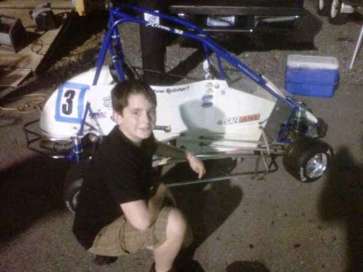
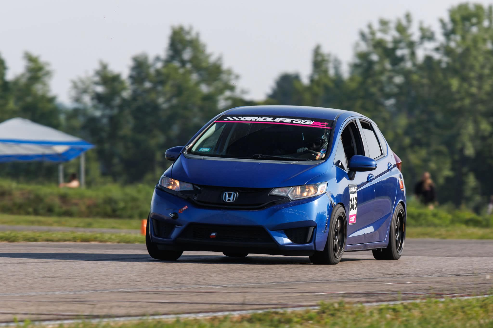
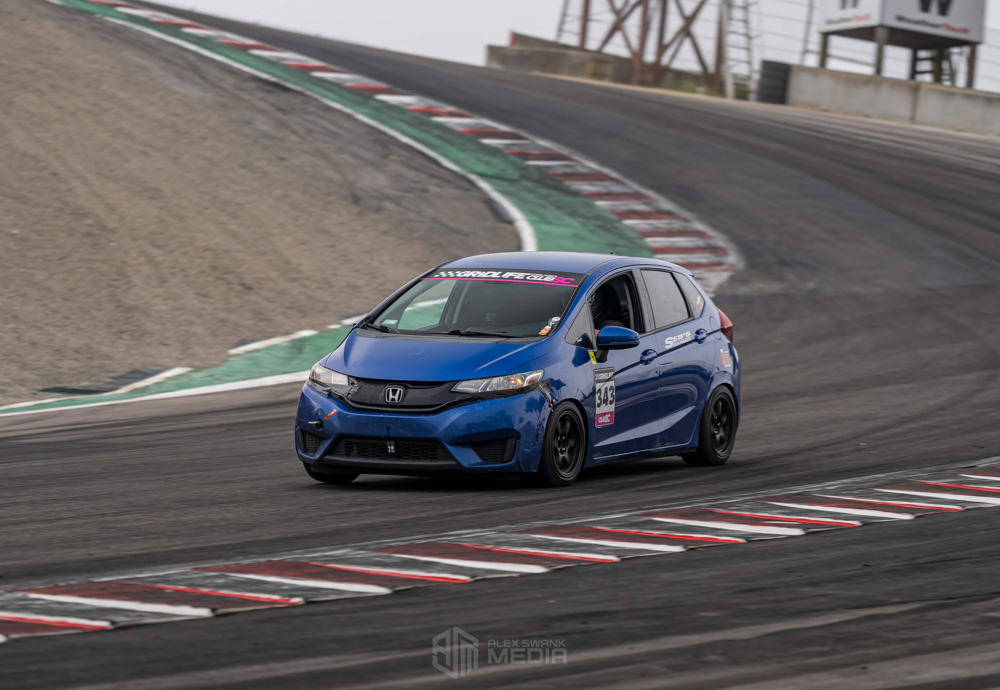

2015 Honda Fit • #343 • Racing since 2022
I started racing in general in 2011 with quarter midgets in Alabama with my Dad. I've always been a racing enthusiast, and my dad wanted to give me a chance to live the dream I had of racing. I came into Time Attack racing in 2022 after watching Honda Fits competing at a race I attended in 2021. I went "Hey, I have a Fit, I can get started", so I talked to one of the racers, who is now one of my best friends, and we worked together on getting me on track.


Racing at Gingerman Raceway, June 2025
These races take place all over the country. One of my favorite events was racing at Laguna Seca in 2025. I was competing with some of my best buddies for a podium spot. My motor blew, and I was only able to place 5th, but the entire weekend was spent improving my times, comparing strategies, and just enjoying life at the track.
My proudest moment:

Going down the Corkskrew turn at Laguna Seca
I am looking to rebuild the motor and get back to racing in 2027. I am going to be designing and welding in a roll cage and fire suppression system, to better align with my goals of wheel to wheel racing (similar to NASCAR or Formula 1) in 2028!
here you can learn more about the racing org's structure and what Time Attack racing is!
I certify that this assignment represents my own work. I have not used any unauthorized or unacknowledged assistance or sources in completing it, including free or commercial systems or services offered on the internet or embedded text-generating systems.